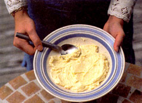

With little know-how and not much money, you can make butter easier than your ancestors did. The result is satisfyingly tasty, easy on the wallet and part of a healthier diet.
There are several reasons to make butter instead of purchasing it. First, real butter is cream, shaken (not stirred) and it provides a basic dietary fat without any unnecessary additives. Modern commercially processed butter can have a variable salt content, and low-fat butters can contain artificial flavoring and coloring, which do little for the palate or waistline. All these additives are allowed under the U.S. Food and Drug Administration requirements.
Second, the heavy cream needed to make real butter can be inexpensively obtained from the grocery store or local dairy cow (about $1 a pint - even cheaper from a local dairy).
Finally, physically shaking the real butter into existence is extremely gratifying. With some instruction, it's easy to make and eat butter the way Mother Nature (or at least Great-grandmother) intended.
For a basic butter recipe, leave 1 pint of heavy cream (also called whipping cream) out on a counter for a few hours until it is slightly sour. If you using ultrapasteurized cream, souring can take up to a full day. It's not necessary, but will make your butter taste much better.
Pour the cream into a 1-quart canning jar with a tight lid. Take a deep breath and shake. Using quick movements, jerk the jar back and forth. The continual motion will produce a nice butter in 5 to 10 minutes. The remaining thin, sour liquid is buttermilk, which can be poured off and saved for use in many baked-goods recipes.
Next, spoon the damp paste into a large bowl. Adding small amounts of cold water, mash the butter with the back of a spoon to remove any remaining buttermilk. Pour off the milky water, taking care not to lose any butter. Continue adding cold water, pressing the butter, and pouring off the liquid until it runs clear. At this point, the butter is ready.
Salt acts as both a flavoring and preservative in butter. In butter making, a little dab will do you - toss in a pinch; stir, and check the flavor. Finally, pack the butter into a container: a widemouthed canning jar, an old margarine tub or a butter mold. Allow the butter to refrigerate overnight, and it will be ready to spread on toast in the morning. Homemade butter lasts about a week or so. An unsavory odor will give spoiled butter away.
JENNIFER BLACKE
Portland, Oregon
|
 |
|
|